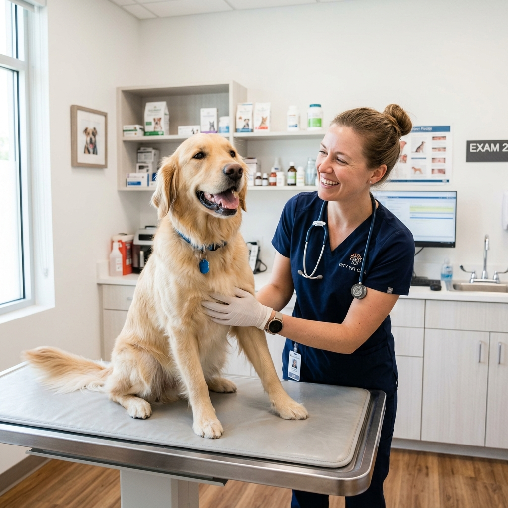
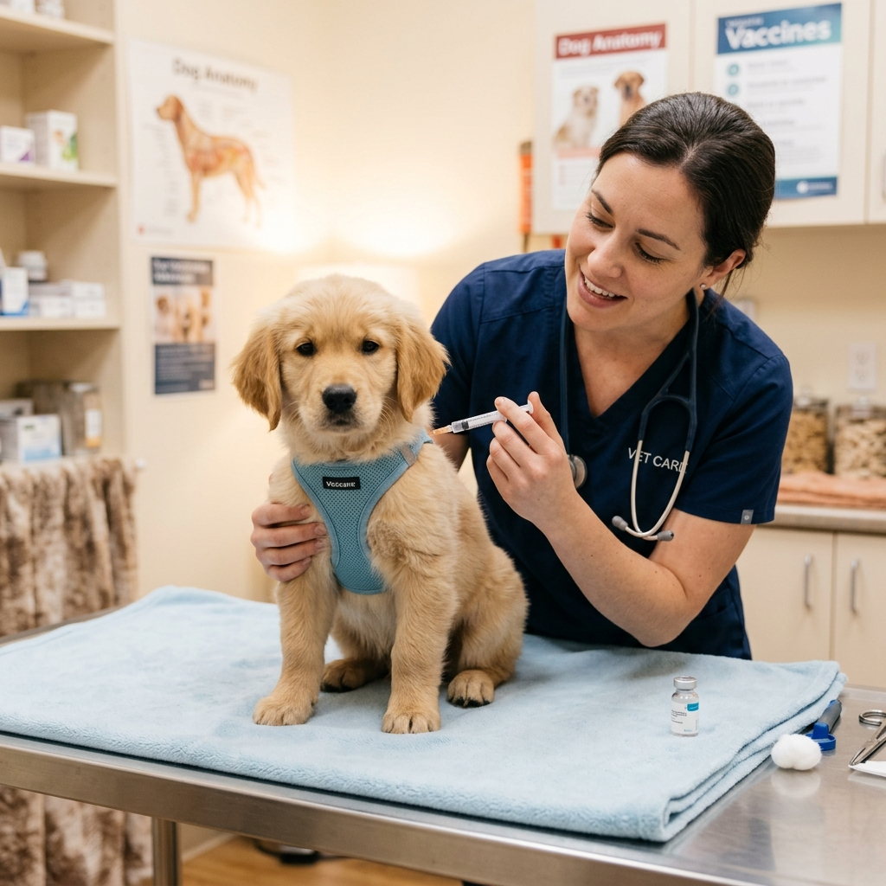
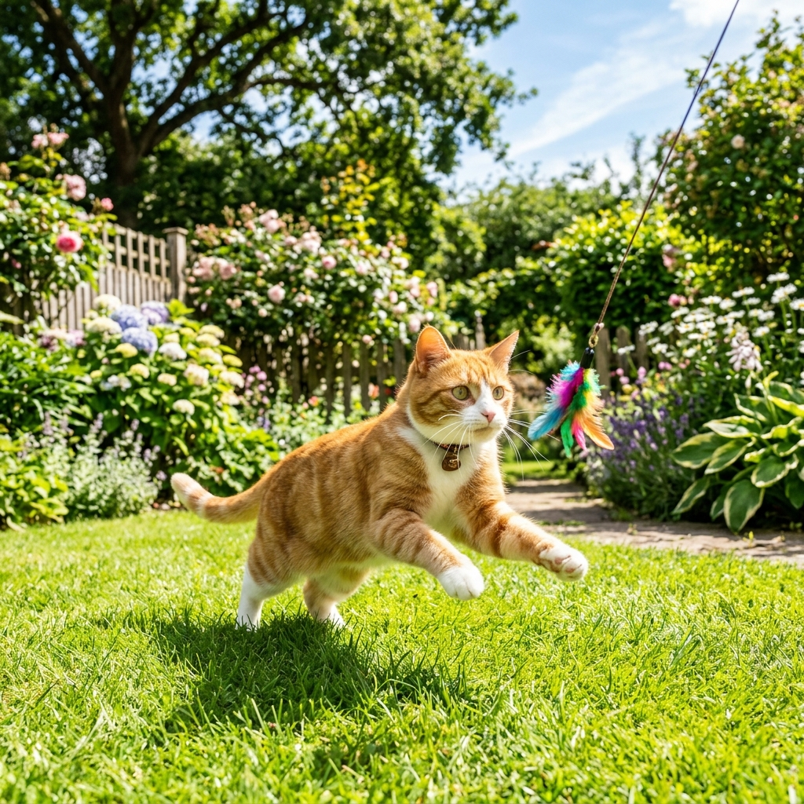
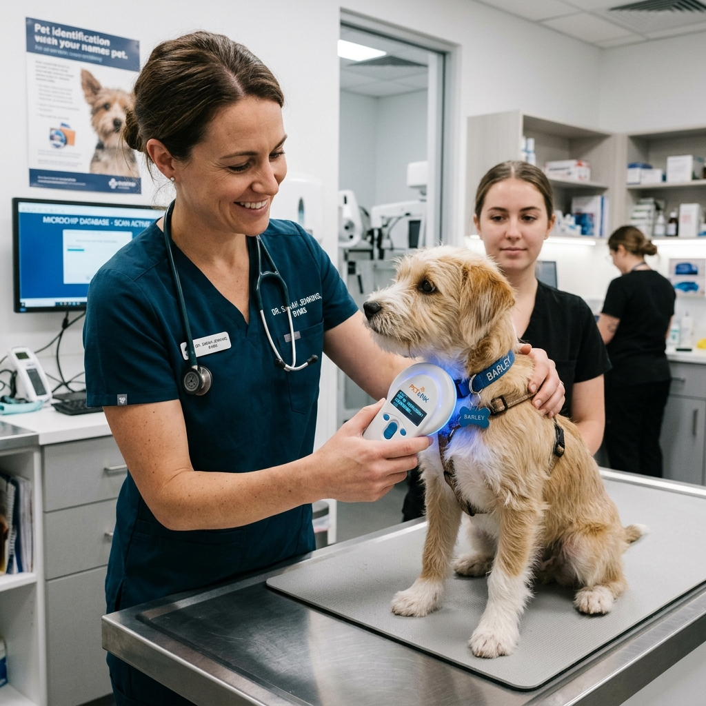
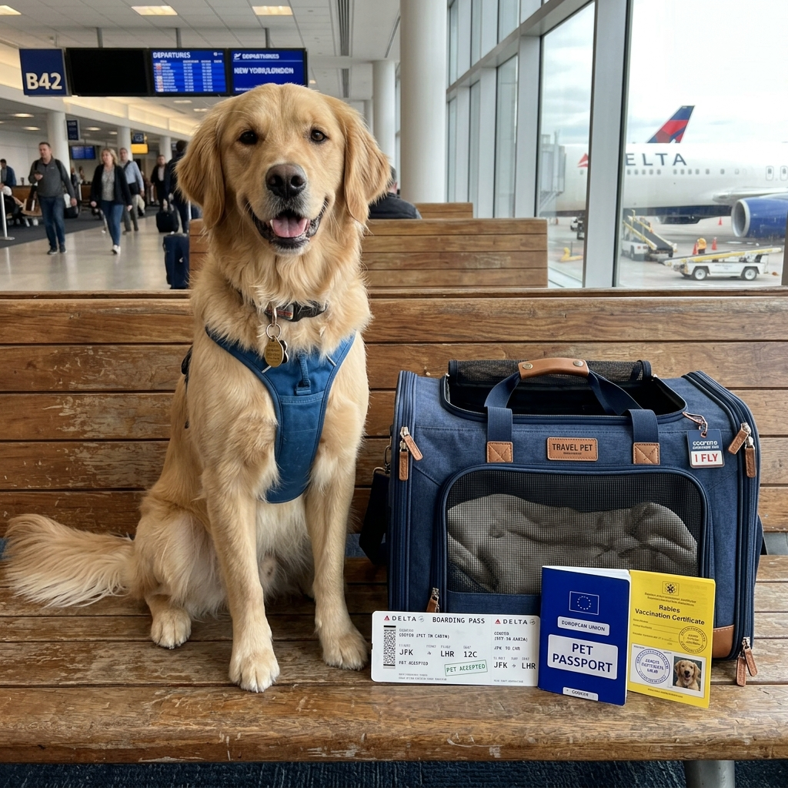
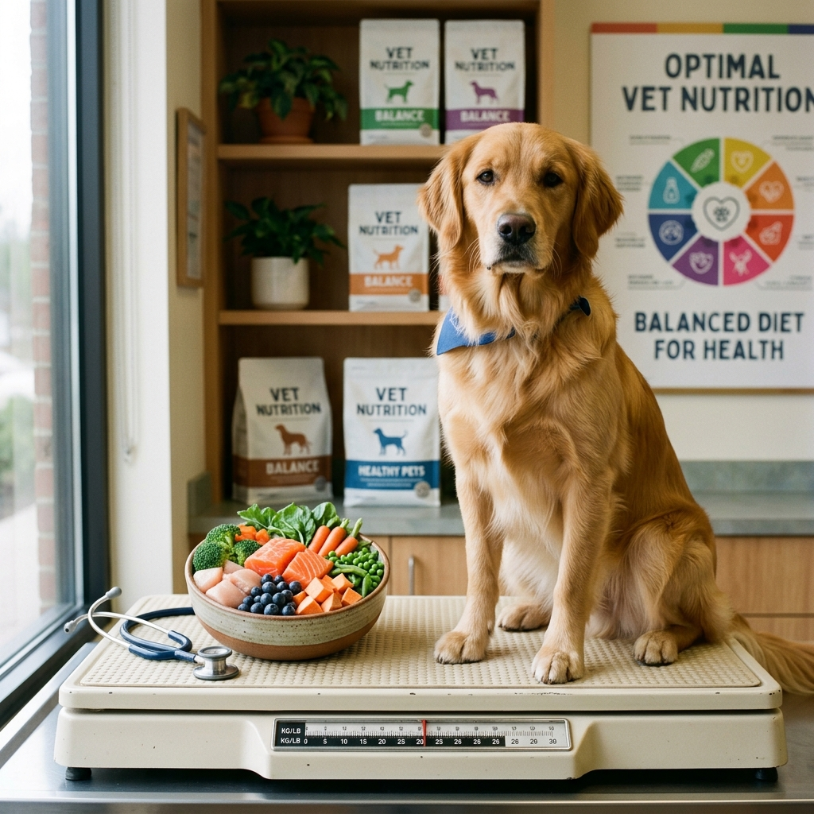

Cuidado completo do focinho à cauda.
Oferecemos uma gama completa de serviços veterinários com equipamentos modernos e uma equipe apaixonada pelo que faz.
Clínica Geral
A base de uma vida saudável começa com acompanhamento contínuo e preventivo.

Consulta de Rotina
Avaliação clínica completa com exame físico detalhado, orientações nutricionais e plano de saúde personalizado para cada fase da vida do seu pet.
Agendar
Vacinação e Imunização
Protocolos vacinais completos para cães e gatos. Vacinas nacionais e importadas contra raiva, distemper, parvovirose, FIV, FeLV e muito mais.
Agendar
Controle de Parasitas
Vermifugação e controle de ectoparasitas (pulgas, carrapatos, sarnas). Calendário personalizado de prevenção para cada pet.
Agendar
Microchipagem
Procedimento rápido e indolor para identificação permanente do seu pet. Essencial para viagens internacionais e para a segurança do animal.
Agendar
Atestado de Saúde
Emissão de atestado zoossanitário para transporte aéreo, terrestre ou internacional, com requisitos do MAPA e documentação completa.
Solicitar
Consulta Nutricional
Avaliação do peso corporal e composição com orientações alimentares individualizadas para prevenir obesidade, doenças renais e ortopédicas.
AgendarDiagnóstico por Imagem e Laboratório
Equipamentos de ponta para que cada diagnóstico seja rápido, preciso e seguro.
Raio-X Digital
Sistema de radiografia digital com alta resolução de imagem. Menos radiação, resultados imediatos e possibilidade de teleradiologia com especialistas.
Ultrassonografia
Equipamento com tecnologia Doppler para avaliação abdominal, cardíaca e obstétrica em tempo real. Sem necessidade de anestesia na maioria dos casos.
Hemograma Completo
Laboratório clínico próprio com resultados em até 15 minutos. Análise de sangue, urina, fezes e citologias para diagnóstico preciso no próprio dia.
Cirurgia e Internação
Bloco cirúrgico equipado e equipe treinada para os procedimentos mais delicados.
Castração (OSH / Orquiectomia)
Procedimento com anestesia inalatória monitorada, controle de temperatura e analgesia multimodal. Alta no mesmo dia na maioria dos casos.
Cirurgias de Tecido Mole
Remoção de tumores, correção de hérnia, gastrotomia, enterotomia e outras cirurgias de abdominal e torácica com monitoramento multiparamétrico.
Ortopedia Veterinária
Fixação de fraturas, correção de luxação de patela (graus I a IV), ligamento cruzado e displasia de quadril em cães de todas as raças e portes.
UTI e Internação 24h
Baias climatizadas, separadas por espécie e tamanho. Monitoramento contínuo de temperatura, pressão e SpO2. Visita do tutor mediante agendamento.
Fluidoterapia e Transfusão
Suporte hídrico e eletrolítico com bombas de infusão de precisão. Banco de sangue veterinário para casos de emergência.
Obstetrícia e Neonatologia
Acompanhamento da gestação por ultrassom, parto natural assistido e cesárea de emergência. Cuidados intensivos para neonatos prematuros.
Especialidades
Além da clínica geral, contamos com especialistas em áreas específicas da medicina veterinária.
Odontologia Veterinária
Limpeza de tártaro (profilaxia), extração dentária, tratamento de reabsorção odontoclástica felina e polimento com equipamento de ultrassom específico.
Oftalmologia Veterinária
Diagnóstico e tratamento de catarata, glaucoma, ceratoconjuntivite seca, úlceras de córnea e entrópio/ectrópio. Biomicroscopia com lâmpada de fenda.
Dermatologia Veterinária
Tratamento de alergias, dermatites atópicas, seborreia, pioderma e otites crônicas. Testes intradérmicos e protocolo de imunoterapia alérgeno-específica.
Cardiologia
Ecocardiograma com Doppler, eletrocardiograma (ECG) e radiografia torácica para diagnóstico de cardiopatias congênitas e adquiridas.
Comportamento Animal
Avaliação e tratamento de ansiedade de separação, agressividade, medos e fobias. Plano de enriquecimento ambiental e terapia comportamental.
Acupuntura Veterinária
Terapia integrativa com acupuntura para dor crônica, recuperação pós-cirúrgica, artrite, epilepsia e distúrbios do sistema nervoso.